Use Stormwater Retention Credits
This guide has step-by-step instructions and screenshots to help you create and submit your form to use Stormwater Retention Credits (SRCs) to meet an Off-Site Retention Volume (Offv) using DOEE's Surface and Groundwater System (SGS).
Please note that if you are not the site owner/SRC owner, you'll need to request to be an agent of the site owner/SRC owner.
Create a New Use SRCs Form
If you want to edit an existing Use SRCs form, skip to Edit an Existing Use Form.
Log in to the SGS. On the SGS home screen, click Erosion, Stormwater, Green Area Ratio and Floodplain, then click My SRCs and Offv. Click Use SRCs to open a new Use SRCs form.
Skip to Enter Information.
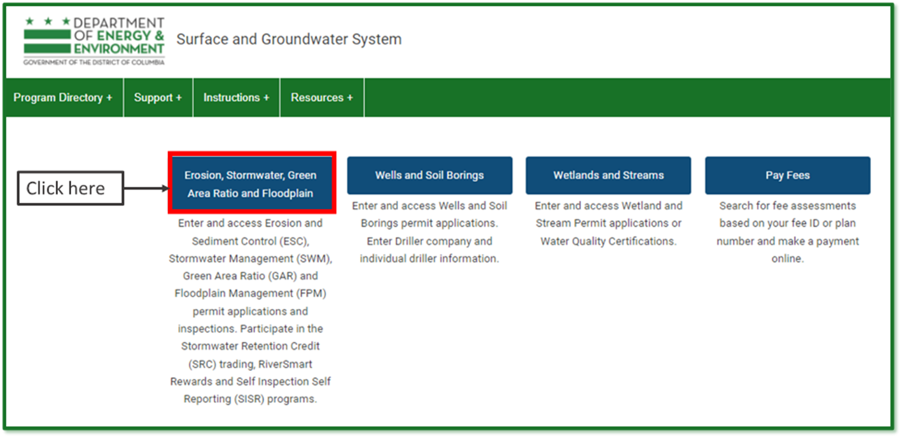
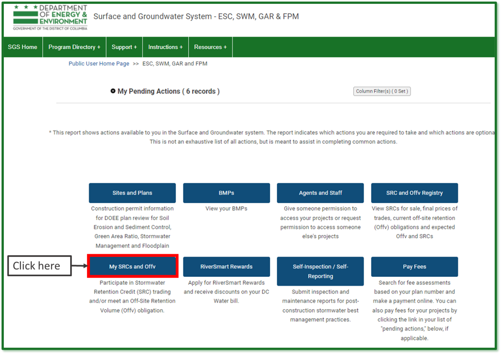
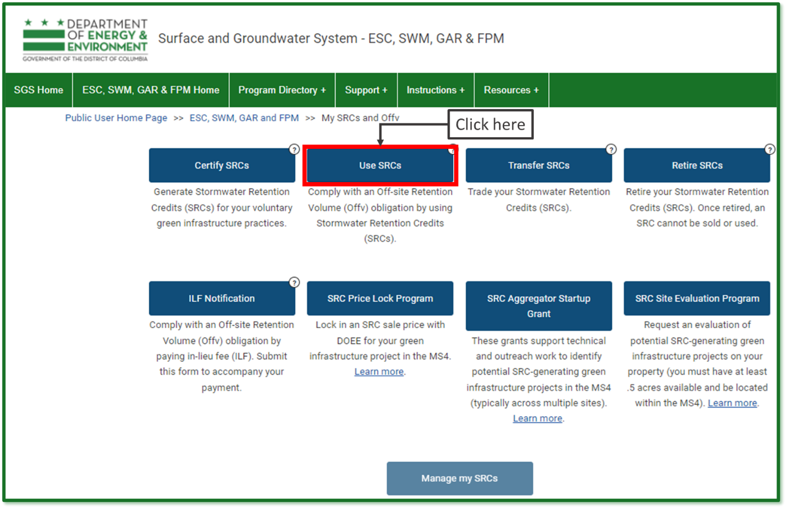
Edit an Existing Use Form
If you have already started a Use SRCs form but have not submitted it yet, log in to the SGS and click Erosion, Stormwater, Green Area Ratio and Floodplain, then click My SRCs and Offv. Do not click the button Use SRCs.
Instead, scroll down to the section called SRC Use Applications. This is where all your in-progress and complete SRC Use forms will be listed. Click the pencil icon next to the form you want to edit.
Note: If you click the Use SRCs button, it will start a new form instead of opening an existing one. If this happens, simply click Cancel to exit and remove the new form.
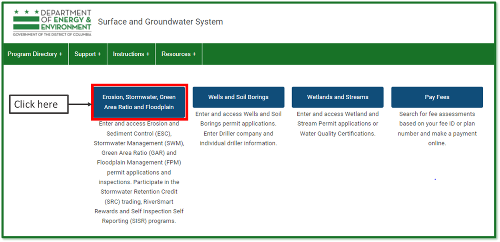
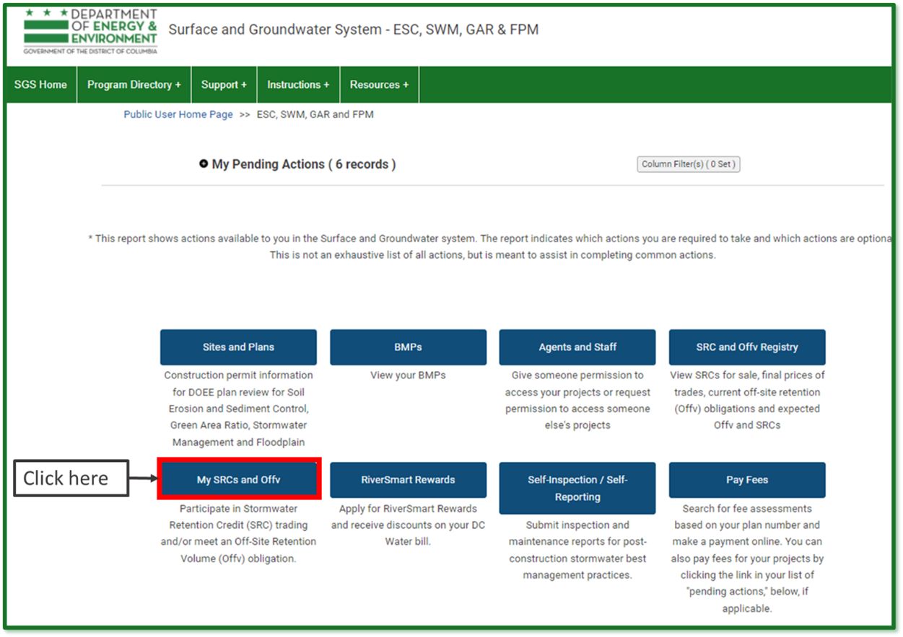
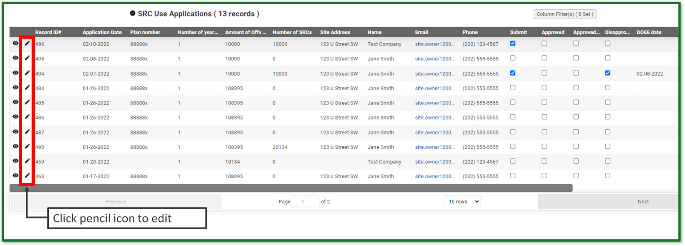
Enter Information
Choose the plan number from the Plan number dropdown for the site where you are using SRCs. You need to have access to the site or you won't see the plan number in the dropdown.
If you do not see the site in the dropdown, you may either need to request agent access, or request a change in site ownership.
Choose the number of years of Offv that you want to meet with this application in the field Number of years of Offv to meet with this application. You must meet it for a minimum of 1 year, but you can meet it for as many years for which you have SRCs.
If you have the exact number of SRCs to meet your Offv for the number of year(s) you want, you can choose Yes in the dropdown under Do you want to use all of your SRCs for this site?
Note: If you choose Yes, you do not need to complete Section 3.
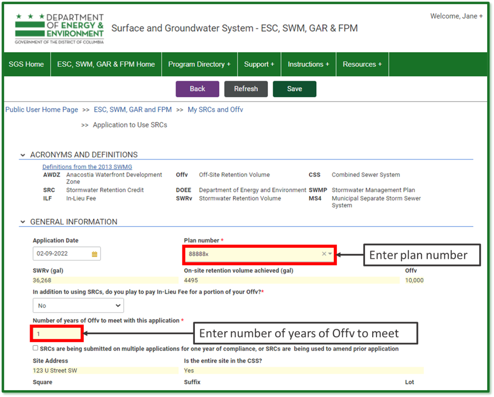
Enter the Current SRC Owner
Go to the Current SRC Owner section. If you are the current SRC owner, select your name in the Name field. Your contact information will populate automatically.
If you [are not]{.underline} the current SRC owner but are submitting the Use SRCs form as their agent, enter the current SRC owner's name in the Name field. Then check the box Add an agent of the site owner to this application and enter your name in the Agent Name field. All contact information will populate automatically.
Note: You need to have an agent relationship set up with SRC permissions in order to complete the Use SRCs form as an agent of the SRC owner.

Select the SRCs to Use
Click Select SRCs to Use. The page will show a list of all the Current SRC Owner's SRCs that may be used with this application. The Surface and Groundwater System displays SRCs in groups (ex. SRCs 1 through 1000). The number of SRCs in each group is listed on each line.
Enter the number of SRCs to use. If you decide you do not want to use any SRCs from this SRC range, uncheck the box Use. When complete, click Return to application. If prompted, click Save.
Repeat steps 7 through 9 as necessary until the total number of SRCs to use is equal to the amount of Offv you want to meet.
Note: If you wish to change the number of SRCs to use, click Edit at the top of the application and overwrite the values in the report. If you do not want to use the SRCs, uncheck the box Use.
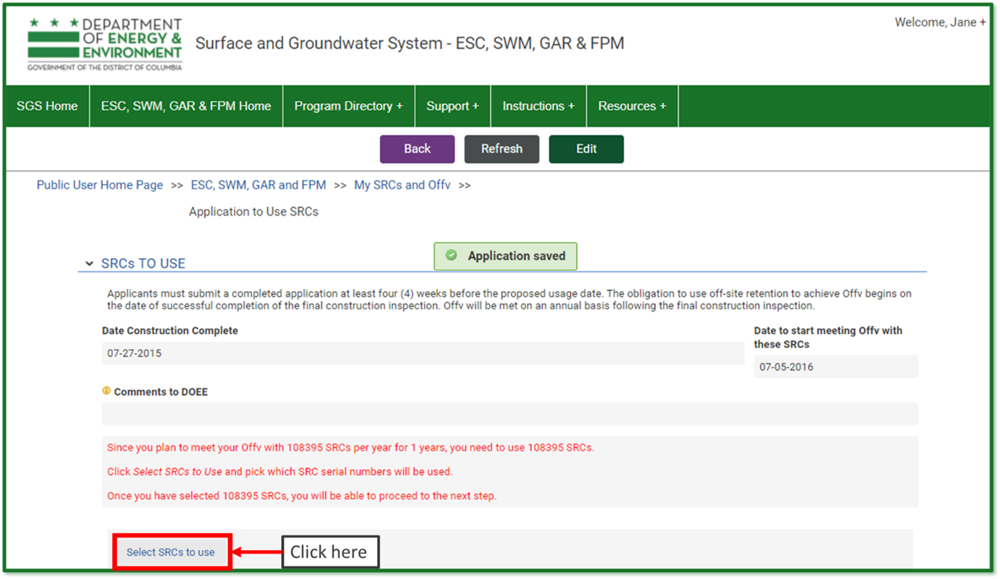
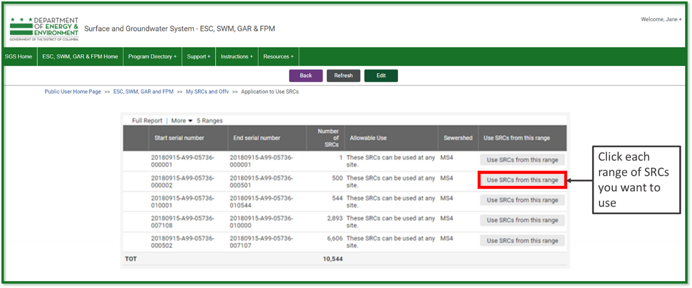
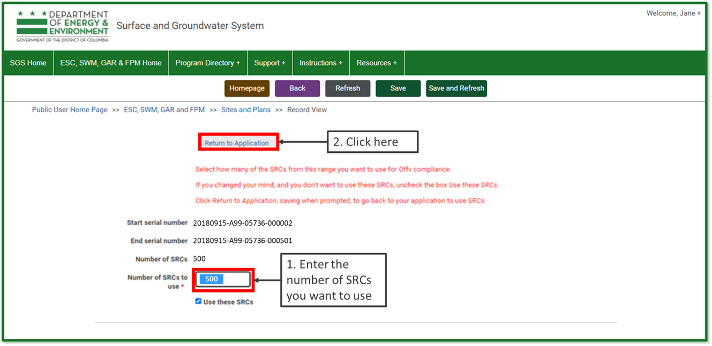
Sign and Submit Application
Click Review, Sign, and Submit once it appears. You may need to scroll down the page to see it. Review your application to make sure the information is correct.
Click Sign and Submit application. Read the signature statement and type your name in the Signature field. Click Submit.
You're done!
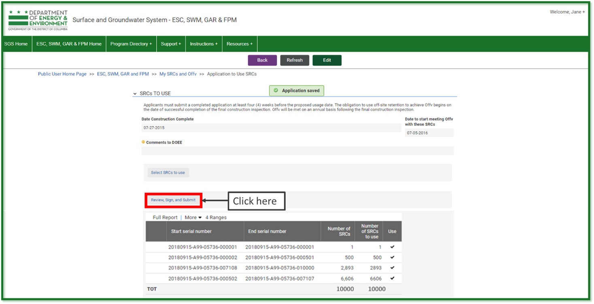
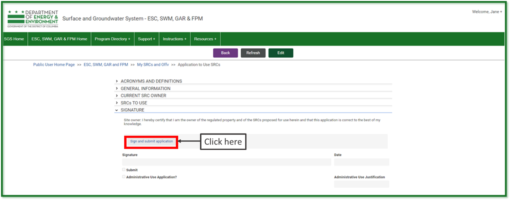
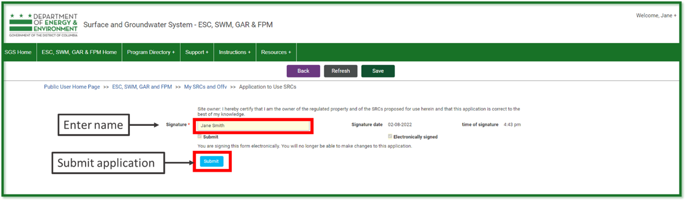